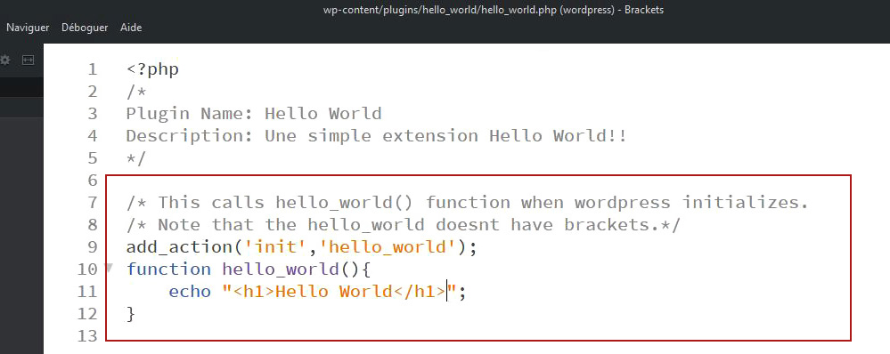

Est-ce que la façon de faire des extensions sont similaires chez Drupal et chez WordPress?
C’est difficile de répondre à la question parce qu’il y a des ressemblances et des différences.
Pour arriver à un résultat concret, j’ai décidé de créer une même extension pour les deux systèmes, une extension simple du type Hello World pour être sûre d’arriver avec succès à un résultat final et pouvoir répondre avec certitude à ma problématique de recherche.
Le but de cette étude n’est pas d’approfondir la connaissance technique, le but est d’apprendre la création d’un module et d’une extension et faire la comparaison entre elles. Et oui, j’ai eu la possibilité de découvrir la façon dont les plugins sont faits dans les deux systèmes.
WordPress et Drupal ont une grande variété de thèmes et de plugins gratuits et payants pour la construction d’un site web, mais beaucoup de gens choisissent de travailler avec WordPress en raison de sa facilité d’utilisation et rapidité d’apprentissage. Son interface est plus intuitive et user-friendly. D’un autre côté, Drupal nécessite d’une expertise technique plus avancée que le WordPress, sa fonctionnalité est plus profonde par rapport à WP.
En ce qui concerne à des ressemblances, la première tâche dans la création d'un plugin est de penser à ce qu’il va faire et créer un nom unique. Puis, créer un dossier avec le nom du plugin et le placer dans le répertoire correspondent, chez WordPress, wp-content > plugins et, chez Drupal, drupal > modules.

Une autre similarité est l’écriture de l’information de base du plugin. Les deux CMS demandent quelques informations comme nom, description et nom de l’auteur pour sa création. Après l’écriture, il suffit de sauvegarder le fichier dans le dossier correspondant pour que le plugin apparaisse dans l’administration du site web dans la rubrique “extensions”. Par contre, la façon dont ces informations sont sauvegardées, est différente pour les deux systèmes et on verra plus tard.
En ce qui concerne à des différences, chez WordPress, un fichier seulement est créé avec les informations de bases et les codes de fonctionnement tout ensemble. Un fichier .php dans lequel on écrit l’entête et le code de fonctionnement de la fonction de l’extension. Dans l’entête de l’extension, comme j’ai mentionné antérieurement, on écrit les informations générales du plugin. L’entête est placé dans un commentaire (entre le /* et */) à la suite de l’ouverture de la balise php. Au minimum, l’entête de l’extension doit obtenir son nom.
Pour ce qui est de Drupal, les informations générales du module sont écrites dans un fichier .info.yml, normalement, le premier fichier à être créé. Ce fichier .yml donne également les informations essentielles du module à Drupal comme dit à Drupal l’existence du module. Donc, il faut écrire son nom, core et type, mais il est recommandé d’écrire, aussi, la description.
C’est en ce moment le plugin apparait dans la liste de plugins dans l’administration du site. Pour le voir, il suffit d’aller, chez WordPress, dans le tableau de bord > extensions et, chez Drupal, dans l’admin > extensions.
Maintenant il arrive le moment de créer la fonction de l’extension / du module. Avec WordPress, on va écrire cette fonction dans le même ficher que l’entête de description.
Et après, il faut choisir la place où l’extension doit être visible. Pour cette étude j’ai choisi d’appeler la fonction de l’extension dans la page d’accueil.
Pour Drupal, on a besoin de créer un contrôleur dans un fichier .php avec la fonction du module. Puis il faut créer une route qui définira la page supplémentaire dans le site web. La convention Drupal, impose de créer la route dans un fichier routing.yml et placé à la racine du module.
Si tout marche bien, on verra une page de « Hello World » dans la page créée avec la route, dans ce cas, /hello_world.
Après la réalisation de tutoriel, j’ai pu répondre à la question. Non, la façon de faire les extensions ne sont pas similaires chez Drupal et chez WordPress. On voit plus de différences que de ressemblances.